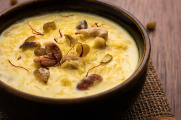

My self Nelluri Naga Manikanta, I'm from Guntur district,Andhrapradesh, India. I have completed my undergraduation in the stream of ECE.After completion of that i have worked in cognizant as Proggammer Analyst. Now i came to USA to pursue Masters in ACS at Northwest missouri state university.
Im very much intrested in cooking.I love to eat semya payasam as it is my favourite sweet and it is also called as kheer.And the other one i like is sathyanarayana swami prasadam, this we can get from Annavaram swami vari Temple.
